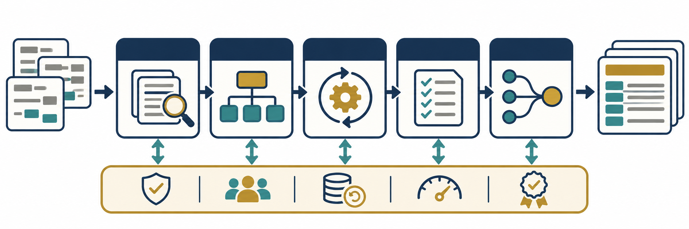

Readiness
Assesses machine actionability, identifiers, schema conformance, and provenance.
A national implementation project
AIMI is an agentic AI infrastructure designed to help libraries make metadata more complete, trustworthy, and ready for AI-enabled discovery.
The challenge
Research repositories now manage datasets, software, notebooks, media, cultural heritage objects, and AI-generated content. Existing metadata automation is often narrowly scoped and difficult to apply across changing formats and standards.
AIMI brings specialized agents into one governed workflow. The system will analyze records, identify gaps, retrieve authoritative knowledge, propose improvements, and validate every result.
Five coordinated agents
Assesses machine actionability, identifiers, schema conformance, and provenance.
Finds missing fields, structural gaps, ambiguity, and semantic misalignment.
Consults authoritative vocabularies, ontologies, and persistent identifiers.
Creates structured, standards-aligned metadata improvements.
Checks consistency, accuracy, transformation quality, and schema compliance.

Pilot environments
Three-year roadmap
Define agent-ready metadata criteria, develop diagnostic agents, and establish baseline assessments.
Build retrieval, enrichment, and validation agents, then test the complete pipeline.
Refine governance, complete external review, and release software and guidance openly.
Open by design
The project will share its agent framework, evaluation evidence, governance guidance, and practical implementation resources through open channels.